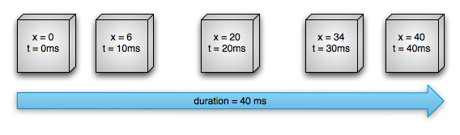

Figure 1. Example of a linear animation
Figure 1. Example of a linear animationThe property animation system is a robust framework that allows you to animate almost anything. You can define an animation to change any object property over time, regardless of whether it draws to the screen or not. A property animation changes a property's (a field in an object) value over a specified length of time. To animate something, you specify the object property that you want to animate, such as an object's position on the screen, how long you want to animate it for, and what values you want to animate between.
The property animation system lets you define the following characteristics of an animation:
First, let's go over how an animation works with a simple example. Figure 1 depicts a hypothetical object that is animated with its x property, which represents its horizontal location on a screen. The duration of the animation is set to 40 ms and the distance to travel is 40 pixels. Every 10 ms, which is the default frame refresh rate, the object moves horizontally by 10 pixels. At the end of 40ms, the animation stops, and the object ends at horizontal position 40. This is an example of an animation with linear interpolation, meaning the object moves at a constant speed.
Figure 1. Example of a linear animation
You can also specify animations to have a non-linear interpolation. Figure 2 illustrates a hypothetical object that accelerates at the beginning of the animation, and decelerates at the end of the animation. The object still moves 40 pixels in 40 ms, but non-linearly. In the beginning, this animation accelerates up to the halfway point then decelerates from the halfway point until the end of the animation. As Figure 2 shows, the distance traveled at the beginning and end of the animation is less than in the middle.
 Figure 2. Example of a non-linear animation
Let's take a detailed look at how the important components of the property animation system would calculate animations like the ones illustrated above. Figure 3 depicts how the main classes work with one another.
 Figure 3. How animations are calculated
Figure 3. How animations are calculated
The ValueAnimator object keeps track of your animation's timing, such as how long the animation has been running, and the current value of the property that it is animating.
The ValueAnimator encapsulates a TimeInterpolator, which defines animation interpolation, and a TypeEvaluator, which defines how to calculate values for the property being animated. For example, in Figure 2, the ITimeInterpolator used would be AccelerateDecelerateInterpolator and the TypeEvaluator would be IntEvaluator.
To start an animation, create a ValueAnimator and give it the starting and ending values for the property that you want to animate, along with the duration of the animation. When you call start() the animation begins. During the whole animation, the ValueAnimator calculates an elapsed fraction between 0 and 1, based on the duration of the animation and how much time has elapsed. The elapsed fraction represents the percentage of time that the animation has completed, 0 meaning 0% and 1 meaning 100%. For example, in Figure 1, the elapsed fraction at t = 10 ms would be .25 because the total duration is t = 40 ms.
When the ValueAnimator is done calculating an elapsed fraction, it calls the ITimeInterpolator that is currently set, to calculate an interpolated fraction. An interpolated fraction maps the elapsed fraction to a new fraction that takes into account the time interpolation that is set. For example, in Figure 2, because the animation slowly accelerates, the interpolated fraction, about .15, is less than the elapsed fraction, .25, at t = 10 ms. In Figure 1, the interpolated fraction is always the same as the elapsed fraction.
When the interpolated fraction is calculated, ValueAnimator calls the appropriate TypeEvaluator, to calculate the value of the property that you are animating, based on the interpolated fraction, the starting value, and the ending value of the animation. For example, in Figure 2, the interpolated fraction was .15 at t = 10 ms, so the value for the property at that time would be .15 X (40 - 0), or 6.
The sdk/example/core/AnimatorTest sample project provides many examples on how to use the property animation system.
The widget animation system provides the capability to only animate Widget objects, so if you wanted to animate non-Widget objects, you have to implement your own code to do so. The widget animation system is also constrained in the fact that it only exposes a few aspects of a Widget object to animate, such as the scaling and rotation of a Widget but not the background color, for instance.
Another disadvantage of the widget animation system is that it only modified where the Widget was drawn, and not the actual Widget itself. For instance, if you animated a button to move across the screen, the button draws correctly, but the actual location where you can click the button does not change, so you have to implement your own logic to handle this.
With the property animation system, these constraints are completely removed, and you can animate any property of any object (Widgets and non-Widgets) and the object itself is actually modified. The property animation system is also more robust in the way it carries out animation. At a high level, you assign animators to the properties that you want to animate, such as color, position, or size and can define aspects of the animation such as interpolation and synchronization of multiple animators.
The widget animation system, however, takes less time to setup and requires less code to write. If widget animation accomplishes everything that you need to do, or if your existing code already works the way you want, there is no need to use the property animation system. It also might make sense to use both animation systems for different situations if the use case arises.
You can find most of the property animation system's APIs in gaia/core/animator. Because the widget animation system already defines many interpolators in gaia/core/animation, you can use those interpolators in the property animation system as well. The following tables describe the main components of the property animation system.
The Animator class provides the basic structure for creating animations. You normally do not use this class directly as it only provides minimal functionality that must be extended to fully support animating values. The following subclasses extend Animator:
ValueAnimator
The main timing engine for property animation that also computes the values for the property to be animated. It has all of the core functionality that calculates animation values and contains the timing details of each animation, information about whether an animation repeats, listeners that receive update events, and the ability to set custom types to evaluate. There are two pieces to animating properties: calculating the animated values and setting those values on the object and property that is being animated. ValueAnimator does not carry out the second piece, so you must listen for updates to values calculated by the ValueAnimator and modify the objects that you want to animate with your own logic. See the section about Animating with ValueAnimator for more information.
ObjectAnimator
A subclass of ValueAnimator that allows you to set a target object and object property to animate. This class updates the property accordingly when it computes a new value for the animation. You want to use ObjectAnimator most of the time, because it makes the process of animating values on target objects much easier. However, you sometimes want to use ValueAnimator directly because ObjectAnimator has a few more restrictions, such as requiring specific acessor methods to be present on the target object.
AnimatorSet
Provides a mechanism to group animations together so that they run in relation to one another. You can set animations to play together, sequentially, or after a specified delay. See the section about Choreographing multiple animations with Animator Sets for more information.
A time interpolator defines how specific values in an animation are calculated as a function of time. For example, you can specify animations to happen linearly across the whole animation, meaning the animation moves evenly the entire time, or you can specify animations to use non-linear time, for example, accelerating at the beginning and decelerating at the end of the animation. Table 3 describes the interpolators that are contained in gaia/core/animation. If none of the provided interpolators suits your needs, implement the ITimeInterpolator interface and create your own. See Using interpolators for more information on how to write a custom interpolator.
AccelerateDecelerateInterpolator
An interpolator whose rate of change starts and ends slowly but accelerates through the middle.
AccelerateInterpolator
An interpolator whose rate of change starts out slowly and then accelerates.
AnticipateInterpolator
An interpolator whose change starts backward then flings forward.
AnticipateOvershootInterpolator
An interpolator whose change starts backward, flings forward and overshoots the target value, then finally goes back to the final value.
BounceInterpolator
An interpolator whose change bounces at the end.
CycleInterpolator
An interpolator whose animation repeats for a specified number of cycles.
DecelerateInterpolator
An interpolator whose rate of change starts out quickly and and then decelerates.
LinearInterpolator
An interpolator whose rate of change is constant.
OvershootInterpolator
An interpolator whose change flings forward and overshoots the last value then comes back.
TimeInterpolator
An interface that allows you to implement your own interpolator.
The ValueAnimator class lets you animate values of some type for the duration of an animation by specifying a set of int, float, or color values to animate through. You obtain a ValueAnimator by calling one of its factory methods: ofInt(), ofFloat(), or ofObject(). For example:
ValueAnimator* animation = ValueAnimator::ofFloatN(2, 0f, 1f);
animation->setDuration(1000);
animation->start();
In this code, the ValueAnimator starts calculating the values of the animation, between 0 and 1, for a duration of 1000 ms, when the start() method runs.
The previous code snippets, however, has no real effect on an object, because the ValueAnimator does not operate on objects or properties directly. The most likely thing that you want to do is modify the objects that you want to animate with these calculated values. You do this by defining listeners in the ValueAnimator to appropriately handle important events during the animation's lifespan, such as frame updates. When implementing the listeners, you can obtain the calculated value for that specific frame refresh by calling getIntAnimatedValue() or getFloatAnimatedValue(). For more information on listeners, see the section about Animation Listeners.
The ObjectAnimator is a subclass of the ValueAnimator (discussed in the previous section) and combines the timing engine and value computation of ValueAnimator with the ability to animate a named property of a target object. This makes animating any object much easier, as you no longer need to implement the IAnimatorUpdateListener, because the animated property updates automatically.
Instantiating an ObjectAnimator is similar to a ValueAnimator, but you also specify the object and the name of that object's property (as a String) along with the values to animate between:
ObjectAnimator* anim = ObjectAnimator::ofFloatN(foo, "alpha", 2, 0.0f, 1.0f);
anim->setDuration(1000);
anim->start();
To have the ObjectAnimator update properties correctly, you must do the following:
Any property animation object need to implement PropertyAnimatable because of setting value. The property animation system will set the property value of the object over time. For example:
class targetObject : public PropertyAnimatable {
private:
float mPropName;
public:
void setPropName(float f) {
mPropName = f;
}
void setFloat(String& name, float value) {
if (name.equals("setPropName")) {
setPropName(float);
}
}
};
The object property that you are animating must have a setter function (in camel case) in the form of set<propertyName>(). Because the ObjectAnimator automatically updates the property during animation, it must be able to access the property with this setter method. For example, if the property name is foo, you need to have a setFoo() method. If this setter method does not exist, you have three options:
- Add the setter method to the class if you have the rights to do so.
- Use a wrapper class that you have rights to change and have that wrapper receive the value with a valid setter method and forward it to the original object.
- Use ValueAnimator instead.
If you specify only one value for the values... parameter in one of the ObjectAnimator factory methods, it is assumed to be the ending value of the animation. Therefore, the object property that you are animating must have a getter function that is used to obtain the starting value of the animation. The getter function must be in the form of get<propertyName>(). For example, if the property name is foo, you need to have a getFoo() method.
The getter (if needed) and setter methods of the property that you are animating must operate on the same type as the starting and ending values that you specify to ObjectAnimator. For example, you must have targetObject->setPropName(float) and targetObject->getPropName(float) if you construct the following ObjectAnimator:
ObjectAnimator::ofFloatN(targetObject, "propName", 1, 1.0f)
Depending on what property or object you are animating, you might need to call the invalidate() method on a widget force the screen to redraw itself with the updated animated values. You do this in the onAnimationUpdate() callback. For example, animating the color property of a Drawable object only cause updates to the screen when that object redraws itself. All of the property setters on Widget, such as setAlpha() and setTranslationX() invalidate the Widget properly, so you do not need to invalidate the Widget when calling these methods with new values. For more information on listeners, see the section about Animation Listeners.
In many cases, you want to play an animation that depends on when another animation starts or finishes. The Cos system lets you bundle animations together into an AnimatorSet, so that you can specify whether to start animations simultaneously, sequentially, or after a specified delay. You can also nest AnimatorSet objects within each other.
The following sample code taken from the Bouncing Balls sample (modified for simplicity) plays the following Animator objects in the following manner:
1.Plays bounceAnim.
2.Plays squashAnim1, squashAnim2, stretchAnim1, and stretchAnim2 at the same time.
3.Plays bounceBackAnim.
4.Plays fadeAnim.
AnimatorSet* bouncer = new AnimatorSet();
bouncer->play(bounceAnim)->before(squashAnim1);
bouncer->play(squashAnim1)->with(squashAnim2);
bouncer->play(squashAnim1)->with(stretchAnim1);
bouncer->play(squashAnim1)->with(stretchAnim2);
bouncer->play(bounceBackAnim)->after(stretchAnim2);
ValueAnimator* fadeAnim = ObjectAnimator::ofFloatN(newBall, "alpha", 2, 1.0f, 0.0f);
fadeAnim->setDuration(250);
AnimatorSet* animatorSet = new AnimatorSet();
animatorSet->play(bouncer)->before(fadeAnim);
animatorSet->start();
For a more complete example on how to use animator sets, see the AnimatorSetTest sample in sdk/core/AnimatorTest.
You can listen for important events during an animation's duration with the listeners described below.
- onAnimationStart() - Called when the animation starts.
- onAnimationEnd() - Called when the animation ends.
- onAnimationRepeat() - Called when the animation repeats itself.
- onAnimationCancel() - Called when the animation is canceled. A cancelled animation also calls onAnimationEnd(), regardless of how they were ended.
IValueAnimatorUpdateListener
- onAnimationUpdate() - called on every frame of the animation. Listen to this event to use the calculated values generated by ValueAnimator during an animation. To use the value, query the ValueAnimator object passed into the event to get the current animated value with the getIntAnimatedValue() or getFloatAnimatedValue() method. Implementing this listener is required if you use ValueAnimator.
Depending on what property or object you are animating, you might need to call invalidate() on a Widget to force that area of the screen to redraw itself with the new animated values. For example, animating the color property of a Drawable object only cause updates to the screen when that object redraws itself. All of the property setters on Widget, such as setAlpha() and setTranslationX() invalidate the Widget properly, so you do not need to invalidate the Widget when calling these methods with new values.
You can extend the AnimatorListenerAdapter class instead of implementing the Animator.AnimatorListener interface, if you do not want to implement all of the methods of the Animator.AnimatorListener interface. The AnimatorListenerAdapter class provides empty implementations of the methods that you can choose to override.
For example, the Bouncing Balls sample in the API demos creates an AnimatorListenerAdapter for just the onAnimationEnd() callback:
class MyListener : public AnimatorListenerAdapter {
public:
void onAnimationEnd(Animator* animation) {
balls->remove((static_cast<ObjectAnimator*>(animation))->getTarget());
}
};
ValueAnimatorAnimator* fadeAnim = ObjectAnimator::ofFloatN(newBall, "alpha", 2, 1.0f, 0.0f);
fadeAnim->setDuration(250);
fadeAnim->addListener(new MyListener());
The property animation system provides the capability to animate changes to WidgetController objects as well as provide an easy way to animate Widget objects themselves.
You can animate layout changes within a WidgetController with the ControllerTransition class. Widgets inside a WidgetController can go through an appearing and disappearing animation when you add them to or remove them from a WidgetController or when you call a Widget's setVisibility() method with VISIBLE, INVISIBLE, or GONE. The remaining Widgets in the WidgetController can also animate into their new positions when you add or remove Widgets. You can define the following animations in a ControllerTransition object by calling setAnimator() and passing in an Animator object with one of the following ControllerTransition constants:
APPEARING - A flag indicating the animation that runs on items that are appearing in the container.
CHANGE_APPEARING - A flag indicating the animation that runs on items that are changing due to a new item appearing in the container.
DISAPPEARING - A flag indicating the animation that runs on items that are disappearing from the container.
CHANGE_DISAPPEARING - A flag indicating the animation that runs on items that are changing due to an item disappearing from the container.
You can define your own custom animations for these four types of events to customize the look of your layout transitions or just tell the animation system to use the default animations.
The ControllerTransitionTest sample in sdk/example/core/AnimatorTest shows you how to define animations for layout transitions and then set the animations on the Widget objects that you want to animate.
The LayoutAnimationsByDefault and its corresponding layout_animations_by_default.xml layout resource file show you how to enable the default layout transitions for WidgetController in XML. The only thing that you need to do is to set the gaia:animateLayoutchanges attribute to true for the WidgetController. For example:
<LinearController
gaia:orientation="vertical"
gaia:layout_width="wrap_content"
gaia:layout_height="match_parent"
gaia:id="@+id/verticalContainer"
gaia:animateLayoutChanges="true" />
Setting this attribute to true automatically animates Widgets that are added or removed from the WidgetController as well as the remaining Widgets in the WidgetController.
An interpolator define how specific values in an animation are calculated as a function of time. For example, you can specify animations to happen linearly across the whole animation, meaning the animation moves evenly the entire time, or you can specify animations to use non-linear time, for example, using acceleration or deceleration at the beginning or end of the animation.
Interpolators in the animation system receive a fraction from Animators that represent the elapsed time of the animation. Interpolators modify this fraction to coincide with the type of animation that it aims to provide. The Cos system provides a set of common interpolators in the gaia/core/animation. If none of these suit your needs, you can implement the ITimeInterpolator interface and create your own.
As an example, how the default interpolator AccelerateDecelerateInterpolator and the LinearInterpolator calculate interpolated fractions are compared below. The LinearInterpolator has no effect on the elapsed fraction. The AccelerateDecelerateInterpolator accelerates into the animation and decelerates out of it. The following methods define the logic for these interpolators:
AccelerateDecelerateInterpolator
public float getInterpolation(float input) {
return static_cast<float>(cos((input + 1) * Math.PI) / 2.0f) + 0.5f;
}
LinearInterpolator
public float getInterpolation(float input) {
return input;
}
The following table represents the approximate values that are calculated by these interpolators for an animation that lasts 1000ms:
| ms elapsed | Elapsed fraction/Interpolated fraction (Linear) | Interpolated fraction (Accelerate/Decelerate) |
|---|---|---|
| 0 | 0 | 0 |
| 200 | .2 | .1 |
| 400 | .4 | .345 |
| 600 | .6 | .8 |
| 800 | .8 | .9 |
| 1000 | 1 | 1 |
As the table shows, the LinearInterpolator changes the values at the same speed, .2 for every 200ms that passes. The AccelerateDecelerateInterpolator changes the values faster than LinearInterpolator between 200ms and 600ms and slower between 600ms and 1000ms.
A Keyframe object consists of a time/value pair that lets you define a specific state at a specific time of an animation. Each keyframe can also have its own interpolator to control the behavior of the animation in the interval between the previous keyframe's time and the time of this keyframe.
To instantiate a Keyframe object, you must use one of the factory methods, ofInt() or ofFloat() to obtain the appropriate type of Keyframe. You then call the ofKeyframe() factory method to obtain a PropertyValuesHolder object. Once you have the object, you can obtain an animator by passing in the PropertyValuesHolder object and the object to animate. The following code snippet demonstrates how to do this:
Keyframe* kf0 = Keyframe::ofFloatN(0.0f, 0.0f);
Keyframe* kf1 = Keyframe::ofFloatN(0.5f, 360.0f);
Keyframe* kf2 = Keyframe::ofFloatN(1.0f, 0.0f);
PropertyValuesHolder* pvhRotation = PropertyValuesHolder::ofKeyframeN("rotation", 3, kf0, kf1, kf2);
ObjectAnimator* rotationAnim = ObjectAnimator::ofPropertyValuesHolderN(target, pvhRotation)
rotationAnim->setDuration(5000ms);
For a more complete example on how to use keyframes, see the ControllerTransitionTest sample in sdk/example/core/AnimatorTest.
The property animation system allow streamlined animation of Widget objects and offerse a few advantages over the widget animation system. The widget animation system transformed Widget objects by changing the way that they were drawn. This was handled in the container of each Widget, because the Widget itself had no properties to manipulate. This resulted in the Widget being animated, but caused no change in the Widget object itself. This led to behavior such as an object still existing in its original location, even though it was drawn on a different location on the screen. In Cos, new properties and the corresponding getter and setter methods were added to eliminate this drawback.
The property animation system can animate Widgets on the screen by changing the actual properties in the Widget objects. In addition, Widgets also automatically call the invalidate() method to refresh the screen whenever its properties are changed. The new properties in the Widget class that facilitate property animations are:
These properties control where the Widget is located as a delta from its left and top coordinates which are set by its layout container.
These properties control the rotation in 2D (rotation property) and 3D around the pivot point.
These properties control the 2D scaling of a Widget around its pivot point.
These properties control the location of the pivot point, around which the rotation and scaling transforms occur. By default, the pivot point is located at the center of the object.
These are simple utility properties to describe the final location of the Widget in its container, as a sum of the left and top values and translationX and translationY values.
Represents the alpha transparency on the Widget. This value is 1 (opaque) by default, with a value of 0 representing full transparency (not visible).
To animate a property of a Widget object, such as its color or rotation value, all you need to do is create a property animator and specify the Widget property that you want to animate. For example:
ObjectAnimator::ofFloatN(myWidget, "rotation", 2, 0.0f, 360.0f);
For more information on creating animators, see the sections on animating with ValueAnimator and ObjectAnimator.
The property animation system lets you declare property animations with XML instead of doing it programmatically. By defining your animations in XML, you can easily reuse your animations in multiple activities and more easily edit the animation sequence.
To distinguish animation files that use the new property animation APIs from those that use the legacy widget animation framework, starting with Cos, you should save the XML files for property animations in the res/animator/ directory (instead of res/anim/). Using the animator directory name is optional, but necessary if you want to use the layout editor tools in the Eclipse CDT plugin, because CDT only searches the res/animator/ directory for property animation resources.
The following property animation classes have XML declaration support with the following XML tags:
The following example plays the two sets of object animations sequentially, with the first nested set playing two object animations together:
<set gaia:ordering="sequentially">
<set>
<objectAnimator
gaia:propertyName="x"
gaia:duration="500"
gaia:valueTo="400"
gaia:valueType="intType"/>
<objectAnimator
gaia:propertyName="y"
gaia:duration="500"
gaia:valueTo="300"
gaia:valueType="intType"/>
</set>
<objectAnimator
gaia:propertyName="alpha"
gaia:duration="500"
gaia:valueTo="1f"/>
</set>
In order to run this animation, you must inflate the XML resources in your code to an AnimatorSet object, and then set the target objects for all of the animations before starting the animation set. Calling setTarget() sets a single target object for all children of the AnimatorSet as a convenience. The following code shows how to do this:
AnimatorSet* set = static_cast<AnimatorSet*>(AnimatorInflater::loadAnimatorN(myContext, R::anim::property_animator));
set->setTarget(myObject);
set->start();
For information about the XML syntax for defining property animations, see Animation Resources.